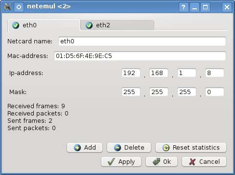

| Manual NetEmul | ||
|---|---|---|
| Prev. | Next | |
MAC-address (Media Access Control) — It is the unique identifier compared with various types of the equipment for computer networks. In broadcasting networks (such as on the basis of Ethernet) the MAC-address allows a network is unique to identify each net point and to supply given only to this site.

In the dialog box, in string "Mac-address" it is possible to set the new address, but by default, at creation of the interface, to it unique number is assigned| Prev. | Main | Next |
| Topology | On layer above | Ip-addressing |